Result gallery for the multi-input workflow (Examples/Step_MIMO1 … Step_MIMO6),
on the shared 2×2 rank-one modal benchmark mimobench (modes ≈ 40 / 95 / 180 Hz).
See also SISO Steps,
SISO Tutorials, MIMO Tutorial.
Orthogonal (Hadamard) multisine over n_in experiments, plus the single-record
zippered design where each input owns interleaved excited lines.
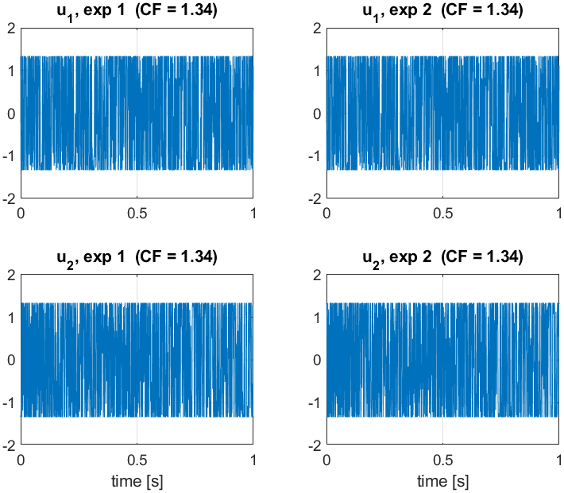
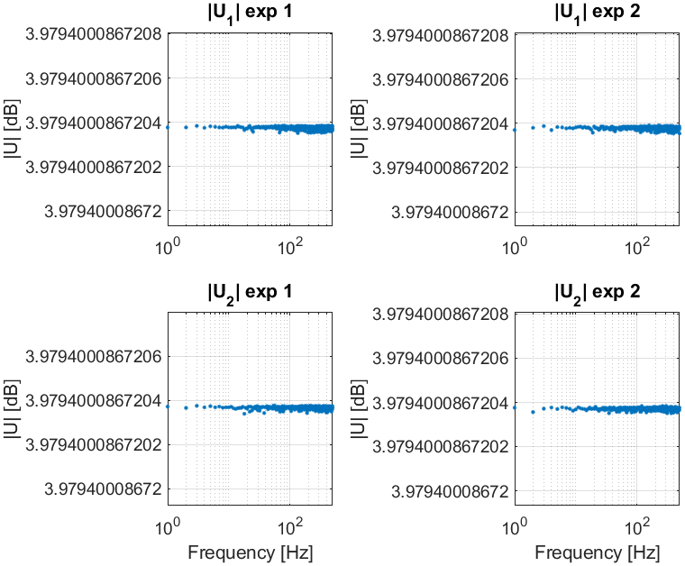
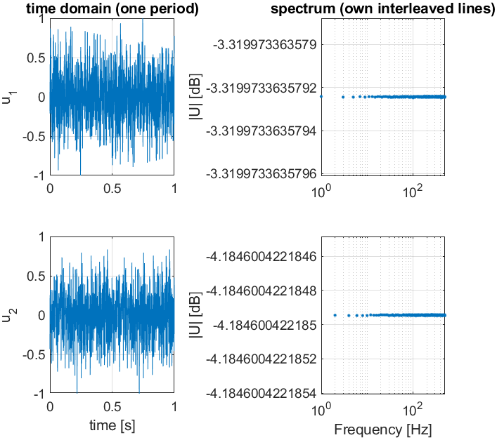
The spectra are flat across the excited lines (the y-axis auto-zooms to floating-point level because every line has identical amplitude).Orthogonal multi-experiment and single zippered estimates both recover the full
2×2 FRF (time2frf_ml); the per-entry 95% confidence band comes from sG.
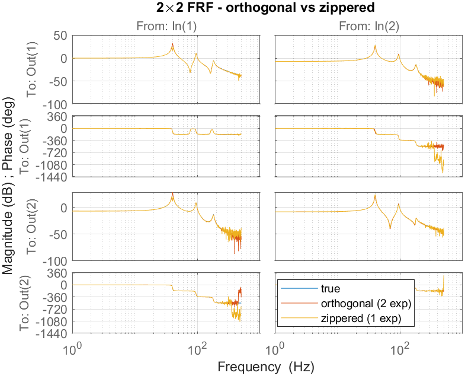
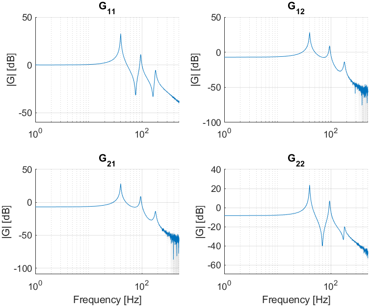
Orthogonal, full-resolution MIMO LPM from short, transient-corrupted records. The main resonances (incl. the 40 Hz peak in G₁₁) are captured, and the LPM error matches settled-ML while ML-with-transient is far worse.
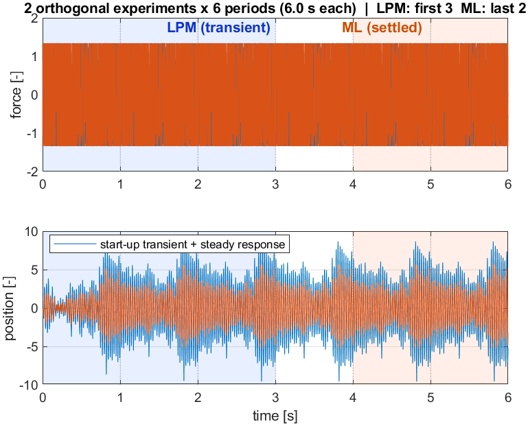
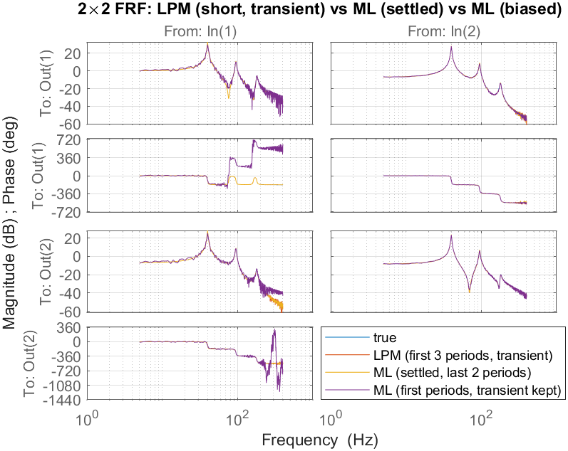
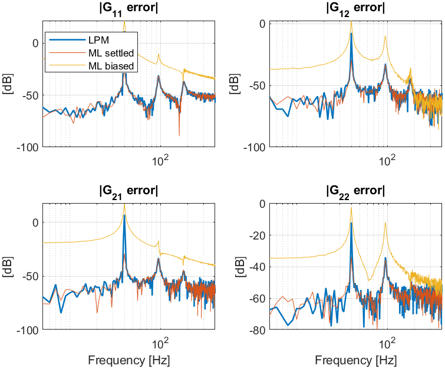
M independent random-phase realizations → Best Linear Approximation. The scatter across realizations (total) minus the scatter across periods (noise) gives the stochastic nonlinear distortion level, which here dominates the noise by 20–30 dB.
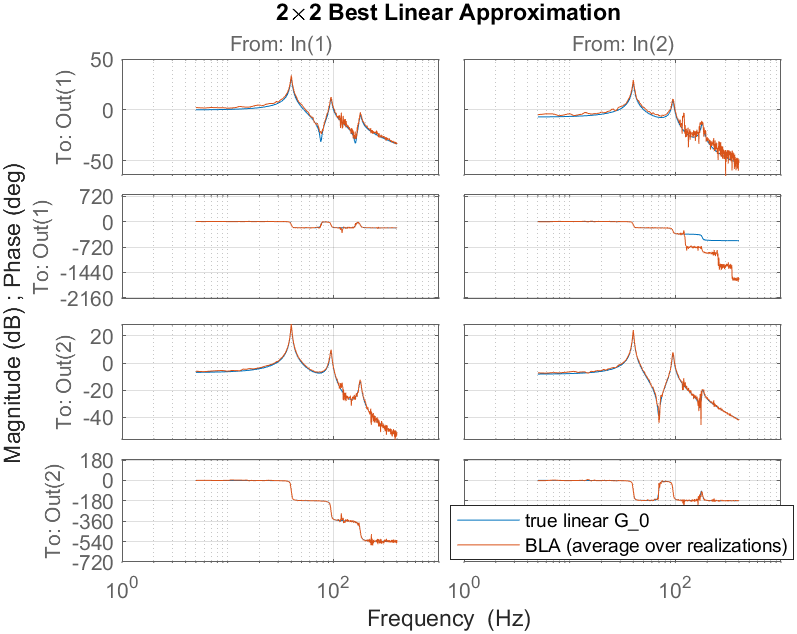
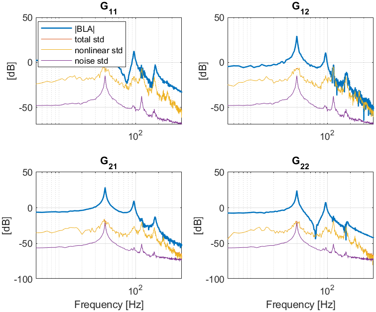
Per entry: |BLA|, total std, nonlinear std and noise std — nonlinear ≫ noise.frf2modal (rank-one residues, two-stage additive→modal, van der Hulst et al.
MSSP 2026) fits a modal model to the 2×2 FRF; it overlays the true plant and the
nonparametric FRF.
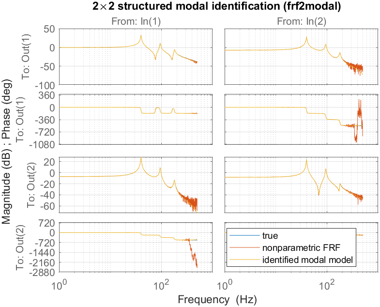
Sweep the number of flexible modes (the noise-normalized cost drops to its floor at the true count of 3), then validate: the modeling error sits at the FRF uncertainty σ_G across frequency.
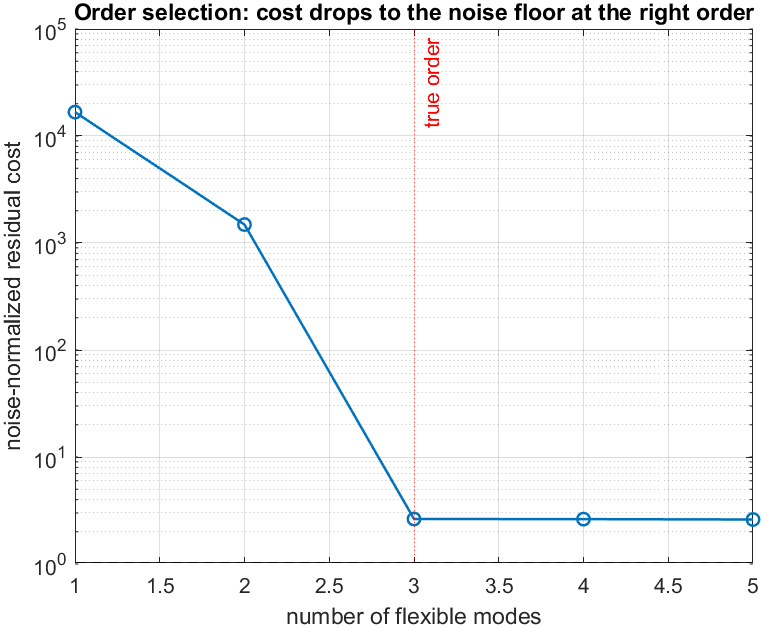
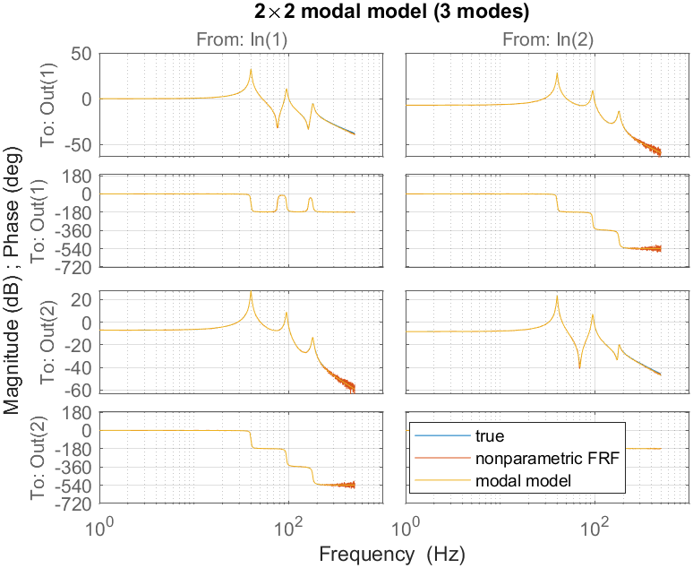
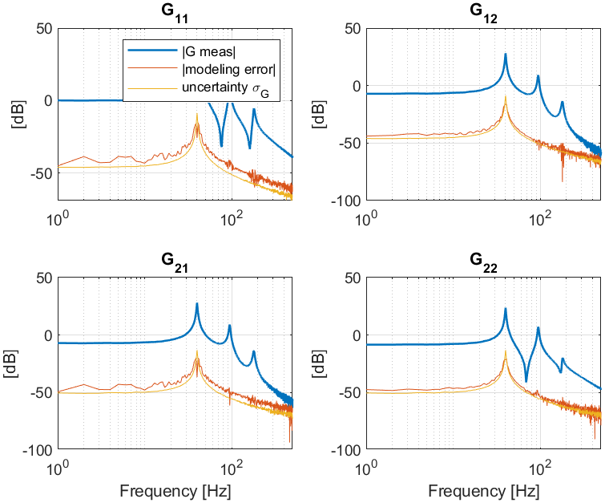
--- identified modal parameters (selected order = 3) ---
mode | wn_true wn_est [Hz] | z_true z_est
1 | 40.00 40.00 | 0.010 0.010
2 | 95.00 95.00 | 0.015 0.015
3 | 180.00 179.98 | 0.020 0.020
modal-model FRF fit vs true : 98.52 %
noise-normalized cost : 2.63
Generated from Examples_Steps_MIMO.md by private-notes/build_html.py — edit the .md, not this file.